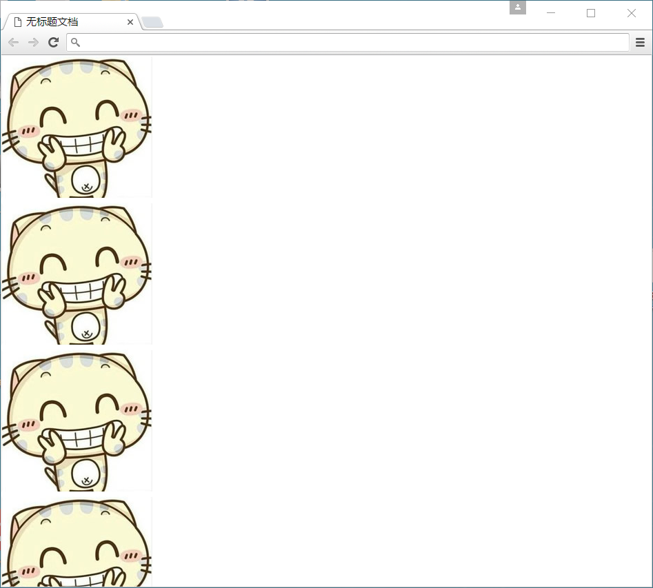

1. CSS 背景(background)
CSS 可以添加背景颜色和背景图片，以及来进行图片设置。
| background-color | 背景颜色 |
| background-image | 背景图片地址 |
| background-repeat | 是否平铺 |
| background-position | 背景位置 |
| background-attachment | 背景固定还是滚动 |
| 背景的合写（复合属性） | |
| background:背景颜色 背景图片地址 背景平铺 背景滚动 背景位置 | |
1.1 背景图片
语法：
background-image : none | url (url)
参数：
none : 无背景图（默认的） url : 使用绝对或相对地址指定背景图像
background-image 属性允许指定一个图片展示在背景中（只有CSS3才可以多背景）可以和 background-color 连用。 如果图片不重复地话，图片覆盖不到地地方都会被背景色填充。 如果有背景图片平铺，则会覆盖背景颜色。
小技巧： 我们提倡 背景图片后面的地址，url不要加引号。
1.2 背景平铺（repeat）
语法：
background-repeat : repeat | no-repeat | repeat-x | repeat-y
参数：
repeat : 背景图像在纵向和横向上平铺（默认的）
no-repeat : 背景图像不平铺
repeat-x : 背景图像在横向上平铺
repeat-y : 背景图像在纵向平铺
设置背景图片时，默认把图片在水平和垂直方向平铺以铺满整个元素。
repeat-x : 背景图像在横向上平铺
repeat-y : 背景图像在纵向平铺

设置背景图片时，默认把图片在水平和垂直方向平铺以铺满整个元素。

1.3 背景位置
语法：
background-position : length || length
background-position : position || position
参数：
length : 百分数 | 由浮点数字和单位标识符组成的长度值。请参阅长度单位 position : top | center | bottom | left | center | right
说明：
设置或检索对象的背景图像位置。必须先指定background-image属性。默认值为：(0% 0%)。 如果只指定了一个值，该值将用于横坐标。纵坐标将默认为50%。第二个值将用于纵坐标。
注意：
position 后面是x坐标和y坐标。 可以使用方位名词或者 精确单位。
如果和精确单位和方位名字混合使用，则必须是x坐标在前，y坐标后面。比如 background-position: 15px top; 则 15px 一定是 x坐标 top是 y坐标。
实际工作用的最多的，就是背景图片居中对齐了。
1.4 背景附着
语法：
background-attachment : scroll | fixed
参数：
scroll : 背景图像是随对象内容滚动 fixed : 背景图像固定
说明：
设置或检索背景图像是随对象内容滚动还是固定的。
1.5 背景简写
background属性的值的书写顺序官方并没有强制标准的。为了可读性，建议大家如下写：
background:背景颜色 背景图片地址 背景平铺 背景滚动 背景位置
background: transparent url(image.jpg) repeat-y scroll 50% 0 ;
2. 盒子模型（CSS重点）
其实，CSS就三个大模块： 盒子模型 、 浮动 、 定位，其余的都是细节。要求这三部分，无论如何也要学的非常精通。
所谓盒子模型就是把HTML页面中的元素看作是一个矩形的盒子，也就是一个盛装内容的容器。每个矩形都由元素的内容、内边距（padding）、边框（border）和外边距（margin）组成。
2.1 看透网页布局的本质
网页布局中，我们是如何把里面的文字，图片，按照美工给我们的效果图排列的整齐有序呢？

牛奶是怎样运输，让消费者购买的呢？
我们说过，行内元素比如 文字 类似牛奶，也需要一个盒子把他们装起来，我们前面学过的双标签都是一个盒子。有了盒子，我们就可以随意的，自由的，摆放位置了。
看透网页布局的本质： 把网页元素比如文字图片等等，放入盒子里面，然后利用css摆放盒子的过程，就是网页布局。
css 其实没有太多逻辑可言 ， 类似我们小时候玩的积木,我们可以自由的，随意的摆放出我们想要的效果。

2.2 盒子模型（Box Model）
这里略过 老旧的ie盒子模型（ie6以下），对不起，我都没见过ie5的浏览器。
css3的 盒子模型 我们后面会讲。
首先，我们来看一张图，来体会下什么是盒子模型。

所有的文档元素（标签）都会生成一个矩形框，我们成为元素框（element box），它描述了一个文档元素再网页布局汇总所占的位置大小。因此，每个盒子除了有自己大小和位置外，还影响着其他盒子的大小和位置。

2.3 盒子边框（border）
边框就是那层皮。 橘子皮。。柚子皮。。橙子皮。。。
语法：
border : border-width || border-style || border-color
边框属性—设置边框样式（border-style）
边框样式用于定义页面中边框的风格，常用属性值如下：
none：没有边框即忽略所有边框的宽度（默认值）
solid：边框为单实线(最为常用的)
dashed：边框为虚线
dotted：边框为点线
double：边框为双实线
2.3.1 表单的边框清零
因为表单边框颜色浏览器不同，样式不同，因此我们需要清零，自己定义样式和颜色，从而达到浏览器兼容效果。
例如： input {border: 0;} textarea {border: 0;}
2.3.2 表格的细线边框
以前学过的html表格边框很粗，这里只需要css一句话就可以美观起来。 让我们真的相信，css就是我们的白马王子（白雪公主）。
table{ border-collapse:collapse; border-spacing: 1px;}
border-collapse:collapse; 表示边框合并在一起。
border-spacing:px; 定义边框之间的间距。
这样就不用给表格指定 cellpadding 和 cellspacing
2.3.3 轮廓 outline
链接获得焦点 有虚线 和 文本框或者文本域获得焦点时，谷歌等浏览器有 蓝色边框，为了提高用户体验。
outline:none;
body a:focus {outline:none;}
textarea { outline: none; }
2.3.4 a:focus 和 a:active 区别
他们两个字面意思，都是点击时。
a:focus 获得焦点的时候 鼠标松开时显示的颜色
a:active 当前活动元素 鼠标在元素上按下还没有松开
1大致相同，唯一的区别是会在Tab键切换时出现虚线边框
2.3.5 盒子边框总结表
| 设置内容 | 样式属性 | 常用属性值 |
|---|---|---|
| 上边框 |
border-top-style:样式; border-top-width:宽度; border-top-color:颜色; border-top:宽度 样式 颜色; |
|
| 下边框 | border-bottom-style:样式; border- bottom-width:宽度; border- bottom-color:颜色; border-bottom:宽度 样式 颜色; |
|
| 左边框 |
border-left-style:样式; border-left-width:宽度; border-left-color:颜色; border-left:宽度 样式 颜色; |
|
| 右边框 |
border-right-style:样式; border-right-width:宽度; border-right-color:颜色; border-right:宽度 样式 颜色; |
|
| 样式综合设置 | border-style:上边 [右边 下边 左边]; | none无（默认）、solid单实线、dashed虚线、dotted点线、double双实线 |
| 宽度综合设置 | border-width:上边 [右边 下边 左边]; | 像素值 |
| 颜色综合设置 | border-color:上边 [右边 下边 左边]; | 颜色值、#十六进制、rgb(r,g,b)、rgb(r%,g%,b%) |
| 边框综合设置 | border:四边宽度 四边样式 四边颜色; |
2.4 内边距（padding）
padding属性用于设置内边距。 是指 边框与内容之间的距离。
panda
padding-top:上内边距
padding-right:右内边距
padding-bottom:下内边距
padding-left:左内边距
 注意： 后面跟几个数值表示的意思是不一样的。
注意： 后面跟几个数值表示的意思是不一样的。
| 值的个数 | 表达意思 |
|---|---|
| 1个值 | padding：上下左右边距 比如padding: 3px; 表示上下左右都是3像素 |
| 2个值 | padding: 上下边距 左右边距 比如 padding: 3px 5px; 表示 上下3像素 左右 5像素 |
| 3个值 | padding：上边距 左右边距 下边距 比如 padding: 3px 5px 10px; 表示 上是3像素 左右是5像素 下是10像素 |
| 4个值 | padding:上内边距 右内边距 下内边距 左内边距 比如: padding: 3px 5px 10px 15px; 表示 上3px 右是5px 下 10px 左15px 顺时针 |
课堂案例： 新浪导航

2.5 外边距（margin）
margin属性用于设置外边距。 设置外边距会在元素之间创建“空白”， 这段空白通常不能放置其他内容。
margin-top:上外边距
margin-right:右外边距
margin-bottom:下外边距
margin-left:上外边距
margin:上外边距 右外边距 下外边距 左外边
取值顺序跟内边距相同。
2.5.1 外边距实现盒子居中
可以让一个盒子实现水平居中，需要满足一下两个条件：
必须是块级元素。
盒子必须指定了宽度（width）
然后就给左右的外边距都设置为auto，就可使块级元素水平居中。
实际工作中常用这种方式进行网页布局，示例代码如下：
.header{ width:960px; margin:0 auto;}
2.5.2 清除元素的默认内外边距
为了更方便地控制网页中的元素，制作网页时，可使用如下代码清除元素的默认内外边距：
*{
padding:0; 清除内边距
margin:0; 清除外边距
}
注意： 行内元素是只有左右内外边距的，是没有上下内外边距的。
2.6 外边距合并
使用margin定义块元素的垂直外边距时，可能会出现外边距的合并。
2.6.1 相邻块元素垂直外边距的合并
当上下相邻的两个块元素相遇时，如果上面的元素有下外边距margin-bottom，下面的元素有上外边距margin-top，则他们之间的垂直间距不是margin-bottom与margin-top之和，而是两者中的较大者。这种现象被称为相邻块元素垂直外边距的合并（也称外边距塌陷）。

解决方案： 避免就好了。
2.6.2 嵌套块元素垂直外边距的合并
对于两个嵌套关系的块元素，如果父元素没有上内边距及边框，则父元素的上外边距会与子元素的上外边距发生合并，合并后的外边距为两者中的较大者，即使父元素的上外边距为0，也会发生合并。

解决方案：
可以为父元素定义1像素的上边框或上内边距。
可以为父元素添加overflow:hidden。
待续。。。。
2.7 宽度和高度（width+height）
使用宽度属性width和高度属性height可以对盒子的大小进行控制。
width和height的属性值可以为不同单位的数值或相对于父元素的百分比%，实际工作中最常用的是像素值。
大多数浏览器，如Firefox、IE6及以上版本都采用了W3C规范，符合CSS规范的盒子模型的总宽度和总高度的计算原则是：
盒子的总宽度= width+左右内边距之和+左右边框宽度之和+左右外边距之和
盒子的总高度= height+上下内边距之和+上下边框宽度之和+上下外边距之和
注意：
1、宽度属性width和高度属性height仅适用于块级元素，对行内元素无效（ img 标签和 input除外）。
2、计算盒子模型的总高度时，还应考虑上下两个盒子垂直外边距合并的情况。
2.8 三个计算题
.demo{width:200px;height:200px;border:1px solid red; padding:20px;}， 盒子最终占有的空间是多大？
一个盒子需要占用的空间是 400像素， 但是盒子又有 padding-left:25px, border: 1px solid red; 问，我们需要改动盒子宽度为多少？
如何让一个200 200像素的盒子， 在一个400 400的盒子里面水平居中，垂直居中。
3. 盒子模型布局稳定性
开始学习盒子模型，同学们最大的困惑就是， 分不清内外边距的使用，什么情况下使用内边距，什么情况下使用外边距？
答案是： 其实他们大部分情况下是可以混用的。 就是说，你用内边距也可以，用外边距也可以。 你觉得哪个方便，就用哪个。
但是，总有一个最好用的吧，我们根据稳定性来分，建议如下：
按照 优先使用 宽度 （width） 其次 使用内边距（padding） 再次 外边距（margin）。
width > padding > margin
原因：
margin 会有外边距合并 还有 ie6下面margin 加倍的bug（讨厌）所以最后使用。
padding 会影响盒子大小， 需要进行加减计算（麻烦） 其次使用。
width 没有问题（嗨皮）我们经常使用宽度剩余法 高度剩余法来做。